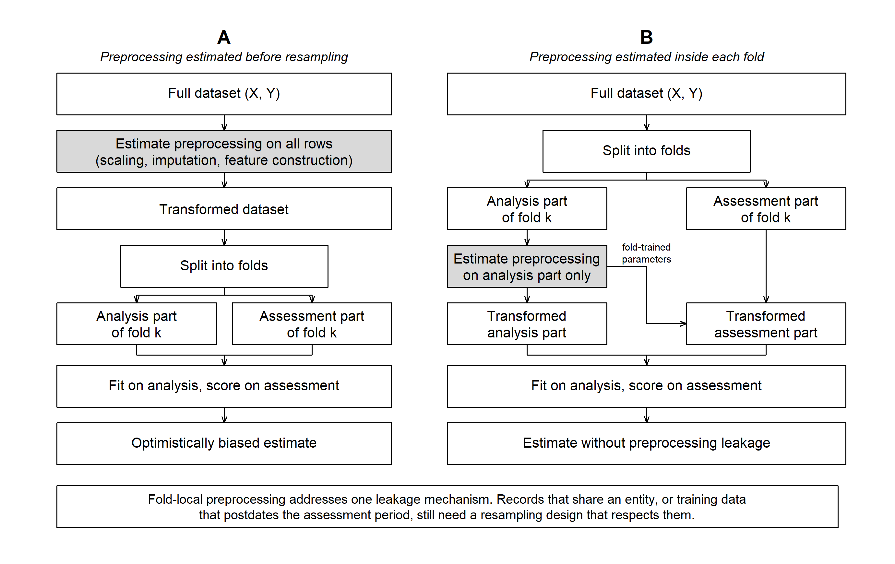

Summary
Source:paper.md
Preprocessing leakage happens when a data-dependent transformation, such as scaling, imputation, class rebalancing or feature construction, is estimated on the whole dataset before resampling. Each fold’s held-out observations have then already influenced the data the model trains on, and the performance estimate that follows is optimistic [@kaufman2012leakage]. This happens even for transformations that never touch the outcome labels [@moscovich2022preprocessing]. Leakage more broadly is widespread. One survey of machine-learning-based science found it in 294 papers across seventeen fields [@kapoor2023leakage], and in connectome-based neuroimaging, leakage through feature selection has been shown to inflate prediction performance substantially [@rosenblatt2024leakage].
fastml is an R package that trains, tunes and compares machine-learning models through a single call. In fastml, fold-local preprocessing is the default execution path and not a convention the user has to remember to follow. Every data-dependent transformation is re-estimated inside each resampling split from that split’s analysis data alone, then applied to the corresponding assessment data. The package covers classification, regression and survival tasks, and it offers resampling designs that respect grouping and time order alongside ordinary cross-validation. The evaluation design stays explicit and under the user’s control.
Statement of need
Modular machine-learning frameworks break modelling into resampling, preprocessing, model specification and evaluation. Modularity is useful, but it also puts the burden of correct composition on the user, who has to apply the steps in the right order and keep training and assessment data strictly separated. Experienced practitioners still get this wrong in grouped, nested or time-ordered designs, because a leaky pipeline is a perfectly valid pipeline: it runs, it produces a number, and nothing in the output suggests that anything is wrong.
We wrote fastml for applied researchers who need a defensible performance estimate more than they need a maximally flexible pipeline. For that audience a silent error is expensive, and the freedom to compose a pipeline in any order is worth little. Every framework discussed below can express a safe workflow. The harder question is how easily each one can also express an unsafe workflow by accident.
fastml answers that by narrowing the interface. Its preprocessing arguments compile to untrained specifications that are estimated only inside the resampling loop. A recipe that has already been passed through prep() may carry parameters estimated outside that loop, so the package rejects it before training begins. The restriction is deliberate. It prevents unsafe combinations, but it also rules out arbitrary pipeline structures, tuning of preprocessing parameters and stacking. Two limitations remain: the package cannot undo preprocessing performed before the call, and a custom step inside a user-supplied recipe can still read values computed elsewhere.
State of the field
Four R frameworks are the obvious points of comparison. caret [@kuhn2008caret] offers a legacy unified training interface. tidymodels [@kuhn2020tidymodels] emphasises explicit composition of recipes, model specifications, workflows and resampling. mlr3 [@lang2019mlr3] provides an object-oriented task and learner design with a strong benchmarking culture, and h2o [@fryda2020h2o] supplies an integrated AutoML system with its own training engine.
The comparison that matters most is with mlr3pipelines [@binder2021mlr3pipelines], because it couples preprocessing to evaluation in much the same way. Its GraphLearner composes preprocessing and a learner into a single object that is re-fitted on the training part of every fold, so fold-local preprocessing is already structural there and no separate guard is needed. tidymodels and mlr3 can express leakage-safe workflows too. They can also express leakage-prone ones, just as easily and with no diagnostic.
fastml was developed not because existing frameworks cannot support safe workflows, but because using them safely depends on the user’s configuration and expertise. Its main distinctions are the default workflow and the constraints it enforces. The package restricts supported pipeline structures so that preprocessing always stays inside the resampling loop, and it rejects unsupported designs rather than running an approximation that could compromise the validity of the estimate. Survival modelling calls for a more qualified comparison. Specialised frameworks such as mlr3proba [@sonabend2021mlr3proba] offer comparable or broader capabilities, and the contribution of fastml there lies in a consistent interface across heterogeneous learners rather than in greater methodological depth.
Software design
Under the guarded path, fastml works through each fold in turn (). It builds the split, fits a fresh preprocessing specification on the analysis data alone, applies that fold-trained specification to both and , and only then fits and evaluates the model. The assessment set is never used to estimate the transformation, only to be transformed by it. Tuning runs inside the same loop, so hyperparameter selection inherits the separation instead of undermining it.

fastml follows. The transformation is re-estimated from each fold’s analysis part alone and then applied to both parts, so the assessment part is only ever transformed, never used to estimate the transformation itself.The second design consideration concerned which requests the software should reject. Fold-local preprocessing addresses one source of leakage, but valid evaluation also requires a resampling design that accounts for dependencies in the data. For example, correlated observations from the same entity may be assigned to different folds [@roberts2017crossvalidation], or training observations may occur after the assessment period [@bergmeir2012crossvalidation]. fastml supports grouped, blocked and rolling resampling designs for these settings, and it returns an error when a requested design cannot be executed as specified. In particular, execution stops if blocked_cv is used without an ordering column, if grouped_cv is used without grouping columns, or if a design that requires ordered data receives observations that are not sorted in ascending order of the ordering variable.
The initial holdout split follows the same principles. When data and test_size are supplied together, the split is determined by the dependence structure the user has declared. If grouping columns are provided, entire groups are assigned to the holdout set. If an ordering column is provided, the final proportion of observations in temporal order is held out. Otherwise, the package uses a random row-wise split, stratified by the outcome for classification. This ensures that grouped cross-validation is never combined with a row-wise holdout.
Core functionality
A single fastml() call trains and compares models from 15 classification, 14 regression and 11 survival model families, mostly through established engines in the tidymodels ecosystem. The package supports seven resampling designs: ordinary and repeated cross-validation (cv, repeatedcv), the bootstrap (boot), grouped_cv, blocked_cv, rolling_origin and nested_cv. The none option provides holdout evaluation without resampling. Grouped, blocked and rolling designs accommodate dependent data, whereas nested cross-validation separates hyperparameter selection from performance estimation. This separation reduces the selection bias that arises when the same folds are used for both purposes [@varma2006bias].
Survival modelling is supported through both parsnip-compatible engines and native implementations. The latter include the XGBoost accelerated failure time model [@barnwal2020aft] and a piecewise-exponential model implemented through flexsurv [@jackson2016flexsurv]. The package also screens user-supplied recipes for steps that depend on external data or the global environment. Additional features include exploratory diagnostics and model interpretation using permutation importance, accumulated local effects (ALE), LIME, individual conditional expectation (ICE) curves, surrogate trees and counterfactual explanations.
Example workflow
library(fastml)
fit <- fastml(
data = my_data,
label = "outcome",
algorithms = c("rand_forest", "logistic_reg"),
resampling_method = "cv",
folds = 10
)
summary(fit) # cross-validated comparison and the selected model
plot(fit, type = "roc")
predict(fit, newdata = new_rows)Preprocessing options, including impute_method, scaling_methods and balance_method, are specified in the same call. Each option defines an untrained preprocessing step that is estimated using only the analysis portion of each fold. Dependence structure is declared in the same call: group_cols identifies grouping variables, while block_col defines the ordering variable for blocked_cv or rolling_origin. These settings determine both the initial holdout split and the resampling folds.
Research impact statement
fastml has been used in three peer-reviewed studies by research groups independent of its developers. @sun2026sla used it to compare random forest, XGBoost, neural network and LightGBM models when building a global atlas of specific leaf area from 24,237 measurements of 5,687 vascular plant species. The analysis script they archived with their data calls fastml() directly (https://doi.org/10.6084/m9.figshare.29666732). Two clinical studies also used the package. @salgadogarza2026 developed and internally validated models of increased healthcare utilisation among 7,535 patients who underwent colectomy for inflammatory bowel disease. @li2026npc compared classification and regression models in a study of circulating microbial metabolites as predictors of tumour relapse and chemotherapy efficacy in nasopharyngeal carcinoma.
We also use the package in our own applied work. @yamasan2026cad implemented every modelling step with fastml in a cross-platform blood-transcriptomics study of coronary artery disease, and its full analysis code is public. A separate methodological study by the developers [@korkmaz2026fastmlpaper] evaluates the package through simulation and applied case studies. Since fastml first appeared on CRAN in November 2024, it has been downloaded about 109,000 times across 15 releases.
AI usage disclosure
We used Anthropic’s Claude models through Claude Code during the development of fastml and the preparation of this manuscript. For software development, AI assistance supported defect identification, diagnosis and the drafting of code and tests. The authors wrote the manuscript and used AI solely to improve language clarity and concision. All package design decisions were made by the authors. Every AI-assisted software change was reviewed, tested and approved before inclusion, and all AI-assisted manuscript edits were checked by the authors. The authors take full responsibility for the software and the manuscript, including any remaining errors.
Conflicts of interest and funding
We declare no financial conflicts of interest. The work received no external funding.